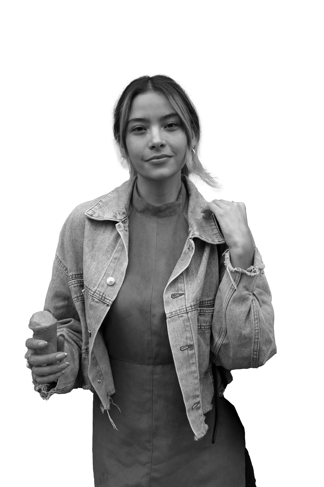

El programa de diseño gráfico de la Universidad Autónoma del Caribe expondrá los proyectos de grado de sus próximos egresados a toda la comunidad académica.
Facultad de Arquitectura, Arte y Diseño
Proyectos
Proyecto Ilustración 1
Libro ilustrado para describir los patrones de conducta en personas con TEA y disminuir su rechazo en el entorno familiar y social en Barranquilla
Carmen Estephani Daza Tovar
Proyecto Ilustración 2
Libro ilustrado para rescatar el valor de la tradición oral en niños de 5 a 11 años del departamento de Sucre
Marelisa Villalba y Almario Jesús David
Proyecto Ilustración 3
Fanzine ilustrado sobre la fauna urbana de Barranquilla para sensibilizar a los jóvenes y adultos entre los 18 y 34 años
María José Chamorro,
Catalina Andrea Bolaño y
Nicolle Alejandra González
Proyecto Ilustración 4
Florella: Ilustración textil en prendas y accesorios utilitarios para la apropiación cultural de la flora autóctona en la ciudad de Barranquilla a mujeres de 25 a 40 años
Maillyn Angarita
Jurados

Ketty Miranda

Alex Pernett

Angely Magdaniel

Sandra Bernal
Cronograma de evento
12 de junio
13 de junio
Proyecto ilustración 1
Proyecto ilustración 2
Proyecto ilustración 3
Proyecto ilustración 4